dsh-deep-whale
社区收录
@Small-tailqwq · ★ 549
dsh-deep-whale
dsh plugin add git+https://github.com/Small-tailqwq/dsh-deep-whale
仓库 ↗
DeepSeek Harness 官方皮肤合集——151 款昼夜成对皮肤，全部通过契约测试，点击卡片即可试看大图。
来自 dsh-suite 目录的社区皮肤插件，按星数排序
@Small-tailqwq · ★ 549
dsh-deep-whale
dsh plugin add git+https://github.com/Small-tailqwq/dsh-deep-whale
仓库 ↗
@lhh010 · ★ 27
dsh-ui-whale
dsh plugin add git+https://github.com/lhh010/dsh-ui-whale
仓库 ↗
@HeiGeAi · ★ 22
deepseek-harness-skin
dsh plugin add git+https://github.com/HeiGeAi/deepseek-harness-skin
仓库 ↗
@dancingmemory · ★ 22
dskin
dsh plugin add git+https://github.com/dancingmemory/dskin
仓库 ↗
@147228 · ★ 16
dsh-xiaoyao-skins
dsh plugin add git+https://github.com/147228/dsh-xiaoyao-skins
仓库 ↗
@suzike · ★ 10
freestyle-dsh-theme
dsh plugin add git+https://github.com/suzike/freestyle-dsh-theme
仓库 ↗
@LaplaceYoung · ★ 8
dsh-qq2006
dsh plugin add git+https://github.com/LaplaceYoung/dsh-qq2006
仓库 ↗
@KinGao294 · ★ 6
dsh-skin
dsh plugin add git+https://github.com/KinGao294/dsh-skin
仓库 ↗
@orxz · ★ 4
deepseek-harness-themes
dsh plugin add git+https://github.com/orxz/deepseek-harness-themes
仓库 ↗
@drfccv · ★ 3
dsh-theme-neko
dsh plugin add git+https://github.com/drfccv/dsh-theme-neko
仓库 ↗
@stushansusu · ★ 2
dsh-miku-skin
dsh plugin add git+https://github.com/stushansusu/dsh-miku-skin
仓库 ↗
@DevourerM · ★ 2
dsh-naiwa-theme
dsh plugin add git+https://github.com/DevourerM/dsh-naiwa-theme
仓库 ↗
共 151 款，按分组浏览；点击卡片查看大图与安装命令
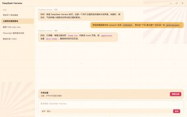
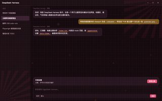
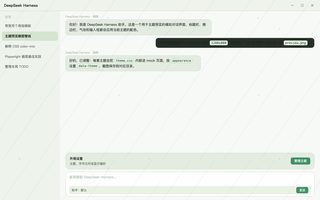
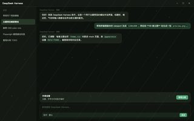
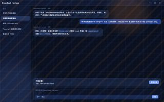
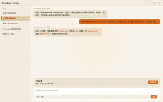
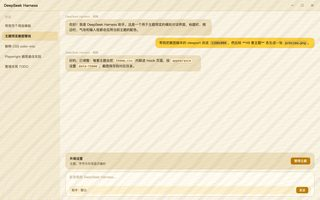
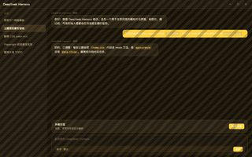
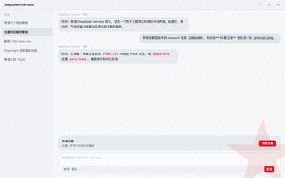
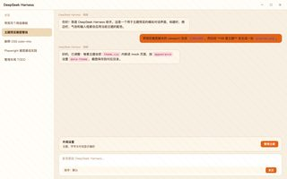
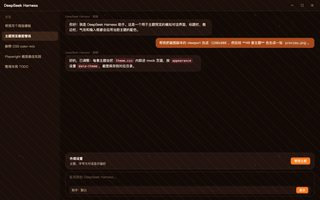
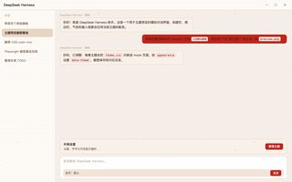
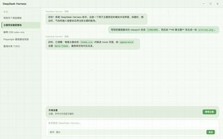
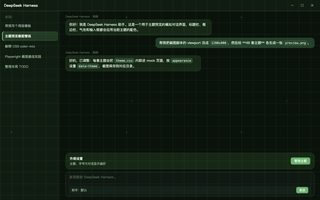
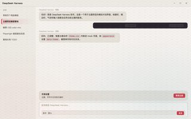
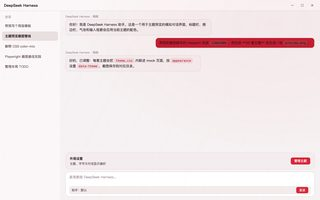
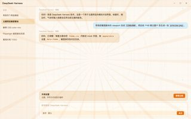
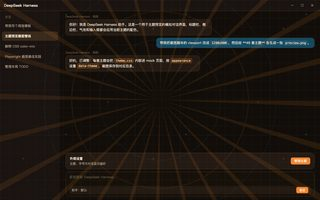
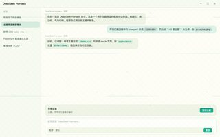
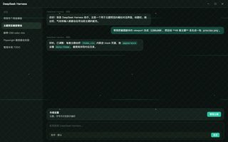
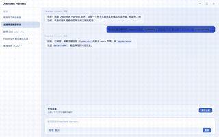
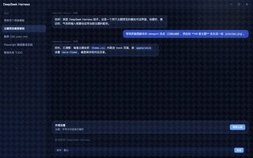
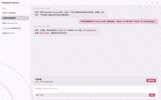
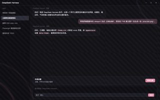
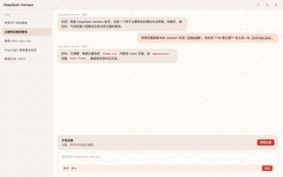
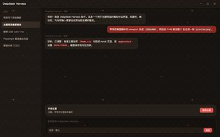
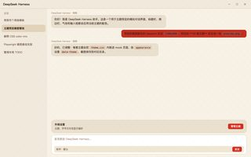
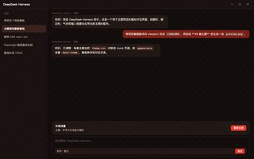
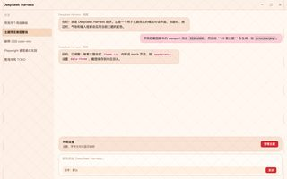
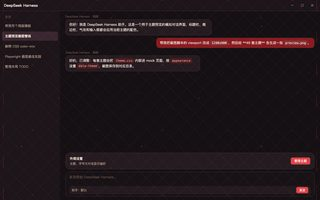
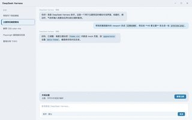
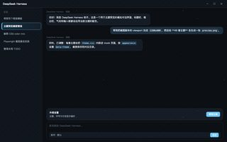
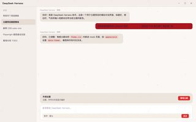
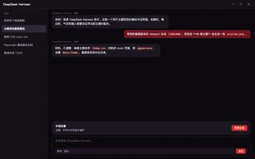
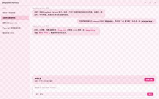
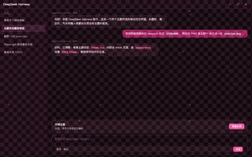
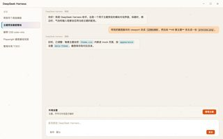
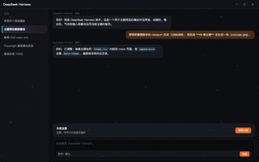
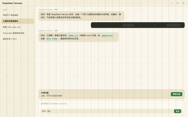
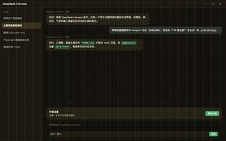
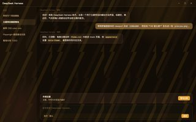
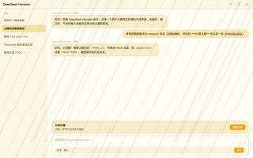
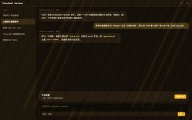
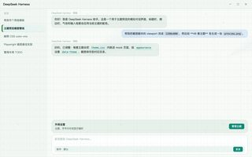
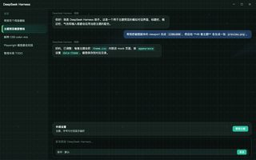
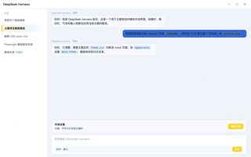
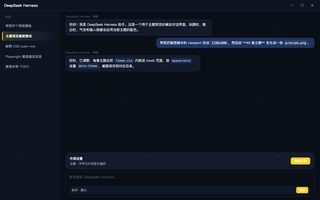
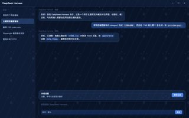
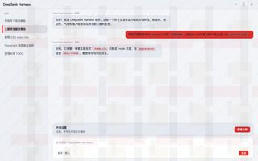
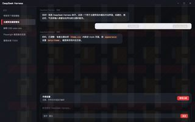